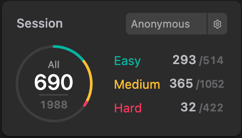

I come from Taiwan which is a beautiful place and full of delicious food. I'm studying computer science at Nation Taiwan University. My thesis title is One-Stage Pulmonary Nodule Detection Using 3-D DCNN with Feature Fusion and Attention Mechanism in CT Image. The purpose of the thesis is to reduce the time that radiologists spend on CT images. Since lung cancer is the most common cause of cancer-related death in men and the second most in women. Early detection has become crucial to reduce the mortality rate. However, reviewing CT images is a time-consuming task for radiologists. Hence, my thesis is to design a 3-D CNN architecture that can detect nodules automatically to reduce the time that radiologists spend on this task. The proposed system can detect nodules in CT images with excellent performance and fast inference time.
I like challenging work and have a strong expectation of self-improvement. To improve my self, I used to solve problems on LeetCode Website which have many type of problem. In addition, I attend the LeetCode weekly contest every week to measure my ability. Although there are many people whose ability is stronger than mine and can solve problems faster than mine with a smarter solution, it still feels great that my rank is climbing and seeing me getting better.
